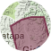
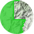
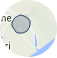
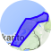
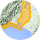

The red transparent areas are control zones. Control zones are managed by Air Traffic Control and extend down to ground level.

The green areas are Military Operating Areas. Permission from the Administering Authority is required.

The blue circled areas indicate a 4km radius around aerodromes.

The bright blue areas are Restricted Areas. Permission from the Administering Authority is required.

The orange areas are Low Flying Zones. UAVs are not permitted to fly in any Low Flying Zones.
Military Operating Areas and Restricted Areas include height data in the pop-up tags. To help you understand this information we have included a key below:
SFC = Surface
FL660 = Flight Level 66,000FT
NOTAM - Notices to Airman (see glossary for further info)